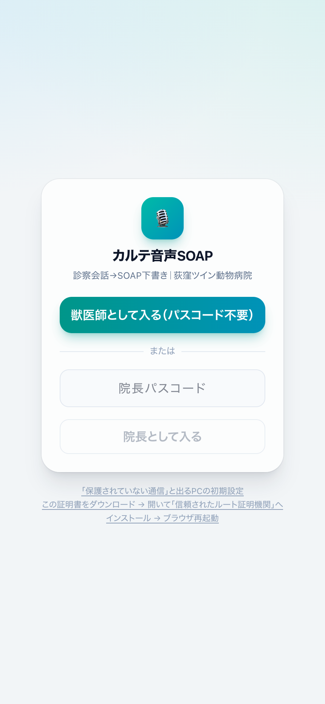
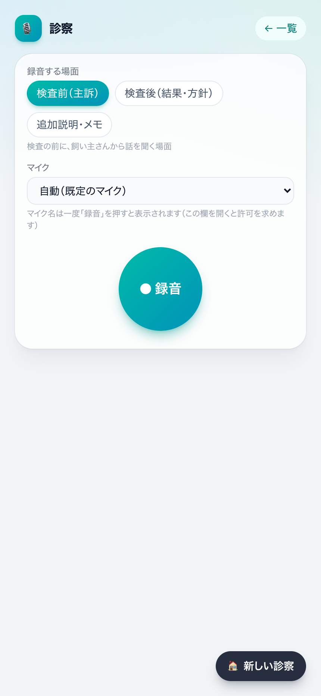
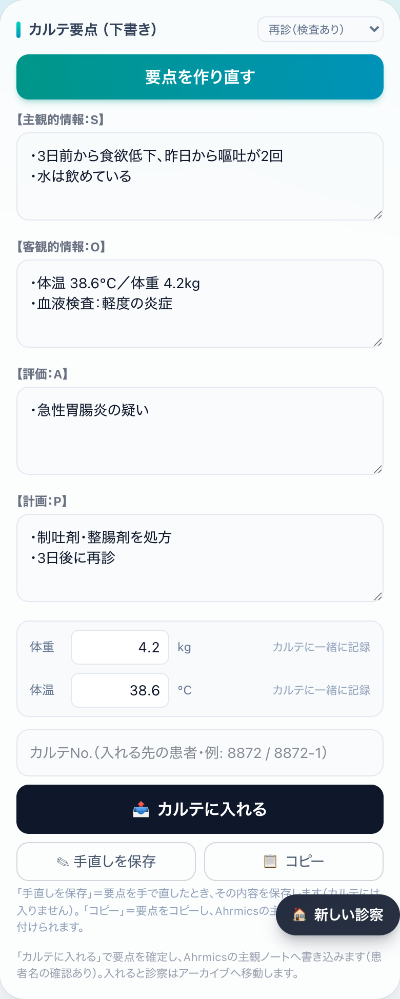

カルテ音声SOAPアプリ 使用ガイド
← ガイド一覧へ 獣医師向け ｜ 2026年7月25日版 ｜ 荻窪ツイン動物病院
30秒まとめ
診察の会話を
話すだけ で、
SOAP形式のカルテ下書き が自動でできるアプリです。録音（またはテキスト）→ AIが
要点をまとめる → 先生が確認・手直し →
「カルテに入れる」でAhrmicsの主観ノートへ書き込み まで、この1画面で完結します。会話で言った
体重・体温 も自動で拾ってカルテに一緒に記録できます。パスコード不要でサッと使えます。
獣医師が使う画面です
緑 = 自動（AI・システム）
🔒 大事なルール：カルテへ入る内容は必ず先生が確認してから。 AIの下書きは「たたき台」です。会話に無い検査・所見・薬・数値・「説明済み」は書かない 設計ですが、最終確認は必ず先生が行ってください（「カルテに入れる」を押した時が確認＝確定です）。
1. アプリを開く
場所 URL・必要なもの 院内（病院のWi-Fi） https://192.168.20.250:3601 Tailscaleは要りません。 病院のWi-Fiにつないで、このURLをそのまま開いてください。初回だけ「保護されていない通信」等の警告が出ることがありますが →「詳細」→「このまま進む」で開けます（院内の安全なアプリです）。ログイン画面下の証明書を入れると警告は消えます。院外（自宅など） https://serverpc.tail2de5bb.ts.net:8449 院外から使う時だけ Tailscale の設定が必要です（分からなければ院長へ）。
🎙️ マイク（録音）を使うには「https（鍵マーク）」のURL で開いてください。マイクは https でしか使えません。上のURLはどちらも https です。診察室のパソコンはUSBマイクを2人の中間（50cm〜1m） に向けると精度が上がります。
ログイン（パスコード不要）

▲ ログイン画面
「獣医師として入る（パスコード不要）」 を押すだけです。一度入ると同じ端末では約30日そのまま使えます。（「院長として入る」は院長用です。）
2. 基本の流れ
① 診察をはじめる 担当の先生・診察タイプ ・カルテNo.を選んで「診察をはじめる」。
▼
② 「● 録音」で会話を録る（またはテキスト） 場面（問診／検査後 など）を選んで録音 → もう一度押して停止。
▼
③ 自動：文字起こし＋要点（SOAP） 会話が文字になり、タイプに合わせて要点がまとまります（体重・体温も自動抽出）。録音を足すたびに要点も自動でまとめ直されます（画面を閉じていてもOK） 。
▼
④ 要点を確認・手直し S/O/A/P を読んで直す。違えば「要点を作り直す」。
▼
⑤ 「カルテに入れる」 画面に出る入れる先の患者名 を確認 → 1回押すだけ でAhrmicsの主観ノートへ書き込み（体重・体温も一緒に）。入れると診察はアーカイブへ。
🪪
カルテNo.欄に番号を入れると、その場で患者名が確認できます。 多頭のお家は
「診たこを選ぶ」ボタン が出るので、枝番を手打ちしなくてOK（→
7. 2頭以上 ）。
3. 診察タイプ（要点の形が変わります）
診察をはじめる時に選びます。タイプによって要点の見出し と必要な録音回数 が変わります。
タイプ 要点の形 録音 再診（検査なし） S・P （主訴と計画のみ）1回・録り終えると自動でまとまる 再診（検査あり） S・O・A・P 検査前・検査後の2回で完成 初診（検査予定） SOAP（1回なら S・O・P） 通常2回・柔軟 半日入院／手術当日 【預かり】【お返し】を別々に 預かり・お返しの2回（同じ日の主観へ2件）
🔄 検査をせずに診察が終わった時 は、要点カード右上の診察タイプを「再診（検査なし）」に変える と、「あと1回の録音で完成します」が消えて、そのまま要点をまとめてカルテに入れられます。
🎙️ 録音を録り忘れた時 （例：検査前を録らずに検査後だけ録った）は、赤い「あと1回で完成します」の案内の中の「この録音だけで要点をまとめる」 を押すと、今ある録音だけで要点を作れます（S・O・A・P の見出しはそのまま。足りない所は先生が書き足せます）。
📄 再診（検査なし）は S・P に固定 です（検査所見Oや評価Aの見出しは自動で足しません）。検査をした診察は「再診（検査あり）」を選んでください。
4. 録音の使い方

▲ 録音画面（サンプル）
録音する場面
タイプに合わせたボタンが出ます（問診／検査前・検査後／結果説明／預かり・お返し／追加説明・メモ ）。飼い主さんのいない所での口述（所見メモ） も「追加説明・メモ」で録れば要点に反映されます。
SOAP分類の指定（任意・複数選べます）
録音する場面の下に「SOAP分類」 があります。ふだんは「おまかせ」（自動） のままでOK。S／O／A／P をタップして選ぶと、その録音の内容を必ずその欄に入れます （例：追加でやった検査の説明を「O（客観）」に固定したい時）。複数選択もできます （2026-07-25〜）：例えば S と O を両方選ぶと、その録音の内容をSとOに振り分けて 入れます（それ以外の欄には入れません）。もう一度タップで解除、「おまかせ」で全部解除。指定は1録音ごと で、送信すると「おまかせ」に戻ります。
録音する（「● 録音」）
「● 録音」 をタップ → 話す。もう一度で停止 、自動で送信されます。会話が途切れて3分 無音が続くと自動で止まります。
途中で手を止めたい時は「⏸ 一時中断」→「▶ 再開」 （中断中は録音されません）。
キーボードで打ちたい時は「テキストで入力」 から。
⏱️ 1つの診察に録音を何回でも足せます。 問診→検査後→追加メモ、と場面を分けて録音すると、要点は全部をまとめて 作ります。すでに要点ができた後に録音を足しても、文字起こしが終わり次第 自動でまとめ直されます （画面を閉じていても進みます）。
🗣️ 専門用語は文脈で自動補正 されます。話し言葉のままで大丈夫です。文字起こしはあとから編集できます。
🎤 マイクがうまく拾えていない時は、上の「マイク」欄 で正しいマイクを選び直してください（端末ごとに記憶します）。
5. 要点（SOAP）の画面

▲ 要点（下書き）画面（サンプル）
要点をまとめる／作り直す
録音が済むと自動で要点 ができます（タイプによっては「要点をまとめる」を押します）。内容がいまいちな時は「要点を作り直す」 。各欄はその場で手直し できます。
録音を足すと自動でまとめ直し（2026-07-25〜）
要点ができた後 に録音（や追加説明・メモ）を足しても、文字起こしが終わり次第、自動で全部を含めてまとめ直されます 。この処理はサーバー側で動くので、画面を閉じていても・別の患者を診ていても進みます 。画面を開いていると「🔄 新しい録音を要点にまとめ直しています…」と表示され、終わると自動で切り替わります。
✋ 自動で上書きしない場合が2つ あります：①「✎ 手直しを保存」した後 （先生の手直しを消さないため）②確定（カルテに入れた）後 。この時は赤いバナー「🔴 新しい録音が要点に反映されていません」が出るので、バナーの「すべての録音で要点を作り直す」 を押してください（カルテに入れた後の追加分は自動で「追記」の要点になります）。
どこまで要点に入ったかは「バッジ」で分かります
録音パートの一覧に、録音ごとの状態バッジが付きます。要点の見出しの下にも「この要点は録音N本分から作成（すべての録音を反映済み）」 と常に表示されます。
バッジ 意味 ✅要点反映済み この録音の内容は、いまの要点に入っています。 🕓要点に未反映 この録音はまだ要点に入っていません（まとめ直し待ち。通常は自動で数十秒〜数分で✅に変わります）。 📤カルテ転記済み この録音の分はすでにAhrmicsのカルテへ入れ済みです。 ⏳文字起こし中 文字起こしの処理中です（終わると自動で要点へ）。
👀 「カルテに入れる」前にバッジをひと目見る のがおすすめです。全部✅なら、要点は最新の状態です。
体重・体温
会話で言った体重・体温 が自動で欄に入ります（例：「体重4.2キロ、体温38度6分」）。数字を確認して、「カルテに入れる」時に一緒にAhrmicsへ記録 されます。手で直してもOK。
文字起こし全文・録音は畳まれます
要点ができると、文字起こし全文と録音エリアは自動で畳まれ 、要点がすぐ読めます。全文を見たい時は「📄 文字起こし全文を表示」 、録音を足したい時は「➕ 録音を追加」 で開けます。
ボタンの意味
ボタン 意味 カルテに入れる 要点を確定して Ahrmicsの主観ノートへ書き込み 。ボタンの上に入れる先の患者名 が出るので確認して1回押すだけ で反映（確認ダイアログはありません）。体重・体温も一緒に記録。入れると診察はアーカイブへ。 コピー 要点を【見出し】付きでコピー。Ahrmicsに手で貼りたい時に。 ✎ 手直しを保存 手直しした要点を保存だけ （カルテにはまだ入りません）。
6. カルテに入れる（Ahrmicsへ）
カルテNo. を入れます（例 1234-1 ）。「カルテに入れる」ボタンのすぐ上に「入れる先：〇〇（飼い主名）」 が出ます。合っているか確認して、ボタンを1回押す だけで反映されます（確認ダイアログはありません）。
本日のカルテの主観ノート（S） へ、先頭に「担当医：〇〇」付きで書き込まれます。体重・体温は客観データへ。
⚠ 「入れる先」の名前が違ったら入れないでください。 カルテNo.を直して照会し直してから入れてください（多頭飼いは枝番＝例 1234-1 が要ります）。
あとから録音を足す（追記）
カルテに入れた後 でも、追加で検査や説明をした時は、その診察を開いて「➕ 録音を追加する」 で録音を足せます。追記分の要点は文字起こしが終わり次第 自動で でき、「📤 追記分をカルテに入れる」 で同じ日の主観ノートに追加 で入ります（前に入れた分はそのまま残ります）。※「作り直す」ではなく「録音を追加する」から足してください。
7. 1回の録音に2頭以上（同じ飼い主さんの複数のこ）
同じ飼い主さんの複数のこを続けて診察 した時（例：わんちゃん2〜3頭）の入れ方です。
いちばんかんたん：番号を入れて「診たこ」を選ぶ
診察をはじめる画面のカルテNo.欄に、お家の番号（例 1234）を入れる と、多頭のお家は「🐾 このお家には3頭います。今日診たこを選んでください」 と子の一覧が出ます。診たこをタップ すると、枝番が自動で入ります（例 1234-1, 1234-3 ）。枝番を手で打つ必要はありません。
✅ 診たこだけ選べます。 3頭のうち2頭だけ診た日は、その2頭だけタップすればOK（診てないこは入りません）。
直接入力でも可
枝番が分かっていれば、カルテNo.欄にカンマ区切りで直接 入れてもOKです（例 1234-1,1234-2 ）。
カルテに入れる時
「カルテに入れる」を押すと、AIが患者ごとに要点を分けて 確認画面を出します（共通する説明は両方のカルテに 入ります）。
各患者のペット名・飼い主名 が出るので確認してOKすると、それぞれのカルテ へ書き込まれます。
🔎 問診票の氏名とカルテ登録名が違う 時は警告 が出ます（例：登録が別の飼い主さんになっている）。気づいたら受付で氏名を直してから入れてください。
🐾 複数のこの名前は自動でカルテの登録名に直ります。 録音で名前を聞き間違えても、カルテの登録名で各このぶんを分けて要点を作ります。ただし、どのこの話か紛らわしい記載もあるので、確認画面で「各このカルテ」と「内容」が合っているか必ず見てください。
8. 一覧の見方（診察が毎日たまらない工夫）
トップの一覧は3つのタブ に分かれています。
タブ 中身 今日・昨日 当日と前日の、まだカルテに入れていない診察。 それ以前 おととい以前の、まだ入れていない診察（録り忘れ・入れ忘れはここに下がります）。 🗄 アーカイブ カルテに入れ終わった（転記済み）診察。
🔗 同じ日・同じカルテNo. の診察が2つに分かれた時は、詳細画面の「この診察にまとめる」 で1つに結合できます（録音が統合されます）。
🗄 追加で入れるものが無い診察 は、診察の詳細画面の下部の「🗄 アーカイブに移す」 で手動でアーカイブへ片付けられます（データは消えません。「↩ 診療中に戻す」 で戻せます）。半日入院で「預かり」だけ入れて「お返し」が無い診察などに便利です。
🗑 録音のない空の診察 は「空の診察を片付ける」でまとめて消せます（録音を始めるまで診察は作られません）。
9. よくある質問
質問 答え マイクが使えない https（鍵マーク）のURL で開いているか、上の「マイク」欄 で正しいマイクを選んでいるか確認を。だめなら「テキストで入力」でもOK。検査をしなかったのに「あと1回」で進めない 要点カード右上の診察タイプを「再診（検査なし）」に変更 すると、そのまままとめられます。 要点がSOAPになってしまう（検査なしなのに） 診察タイプが「再診（検査あり）」等になっていないか確認を。「再診（検査なし）」はS・P固定 です。 体温・体重が入らない 会話ではっきり数字を言う と自動で入ります。入らなければ欄に手で入力してください。 2頭まとめて診た カルテNo.欄にお家の番号（例 1234） を入れると「診たこを選ぶ」 が出ます。タップで枝番が自動で入ります（枝番のカンマ直接入力＝1234-1,1234-2 も可）。名前は自動でカルテ登録名に直りますが、確認画面で内容を見てください。 録音を録り忘れた（検査後だけ等） 赤い案内の中の「この録音だけで要点をまとめる」 で、今ある録音だけでまとめられます。 録音を足したのに要点に入っていない気がする 録音一覧のバッジ を見てください。🕓要点に未反映／⏳文字起こし中 なら少し待てば自動で✅に変わります（画面を閉じていてもOK）。赤いバナー「反映されていません」が出ている時は手直し保存・確定の後なので、バナーのボタンで作り直し てください。 カルテに入れた後に追加で検査した その診察を開いて「➕ 録音を追加する」 →録音→「追記分をカルテに入れる」 で同じ日のカルテに追加できます。 入れ終わった診察を片付けたい 詳細画面の下の「🗄 アーカイブに移す」 で片付きます（データは消えません。「↩ 診療中に戻す」で戻せます）。 入れた要点がカルテに見えない Ahrmics側でそのカルテを一度閉じて開き直す と表示されます。それでも無ければ院長へ。 使いにくい・こうしてほしい 改善要望はいつでも院長まで。すぐ直せることが多いです。
⚠ 患者情報の取り扱い： カルテNo.・患者名・会話内容はこのアプリと院内カルテ（Ahrmics）の中だけ で保管され、外部（LINE・SNS等）には出ません。ただし院外で画面を開いたまま席を離れない・画面の写真をSNS等に載せない でください。（このガイドの画像はすべてサンプルで、実在の患者情報は含みません）
荻窪ツイン動物病院 ｜ カルテ音声SOAPアプリ 使用ガイド（2026年7月25日版）